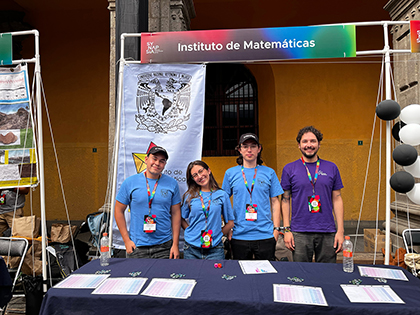
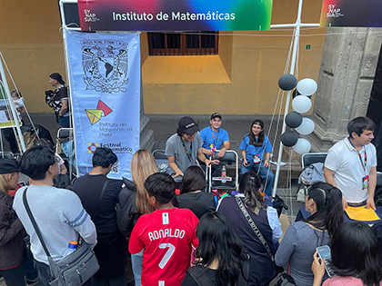
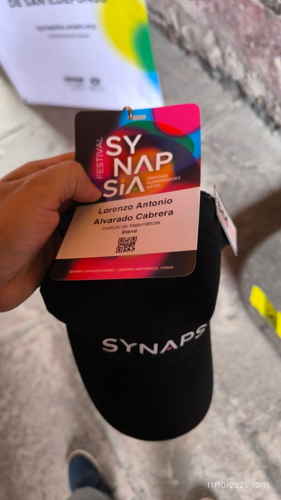
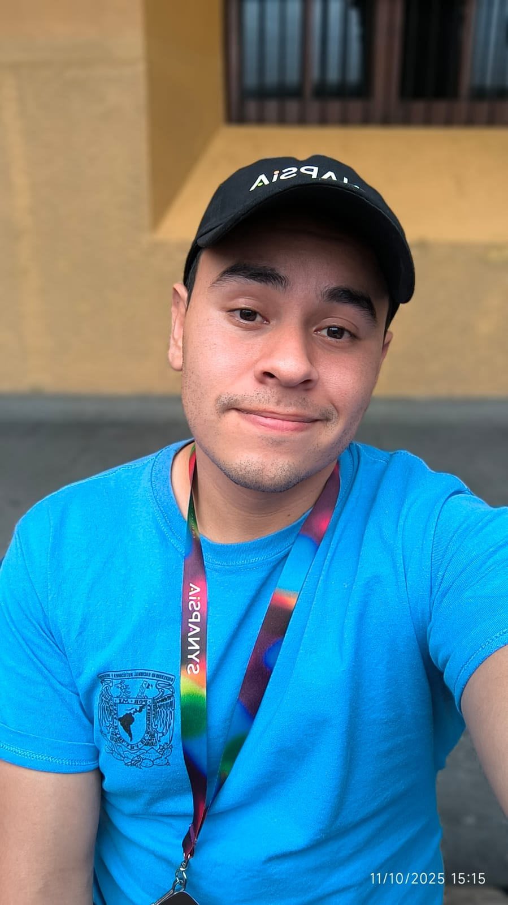
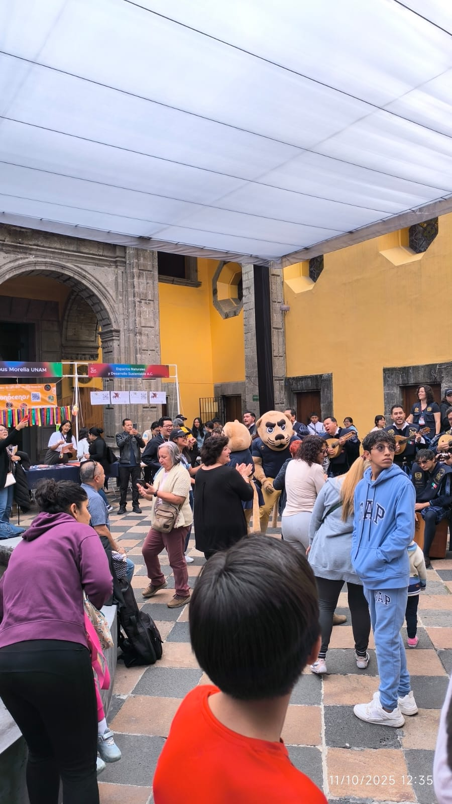
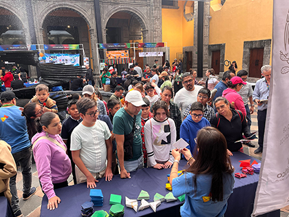
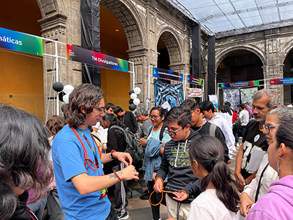
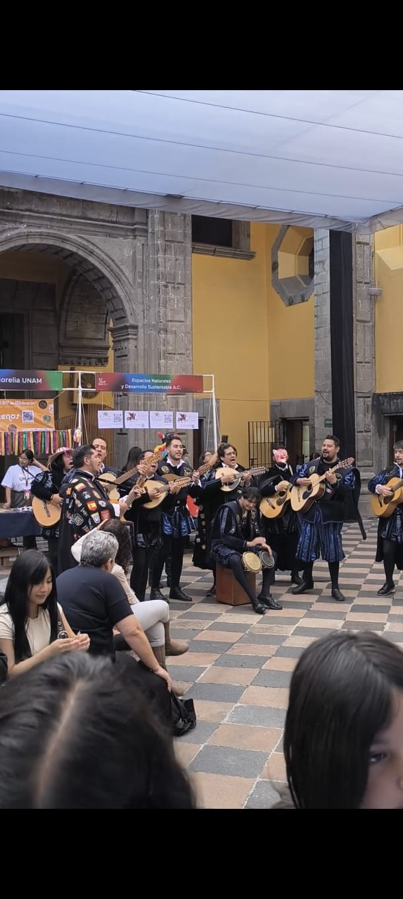
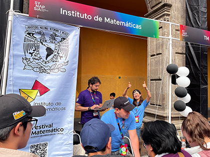
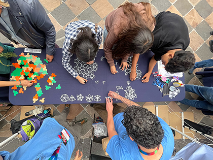

Synapsia is a dynamic festival held in the Barrio Universitario of the Historic Center of Mexico City, utilizing both historical buildings and public corridors as meeting points. It represents a strategic evolution of the former Fiesta de las Ciencias y las Humanidades, transforming over a decade of outreach experience into a more flexible, transversal, and interactive space designed to resonate with the new interests and languages of today's youth.
The event's core philosophy is to reconnect knowledge, moving away from fragmented disciplines to a model where science, art, and experience intertwine. Synapsia functions as a laboratory and expanded classroom where knowledge is not just transmitted but co-created through dialogue. Within this environment, I participated with the Festival Matemático team, contributing activities that align with this interdisciplinary vision and demonstrating how mathematics acts as a bridge between different worlds of knowledge.









